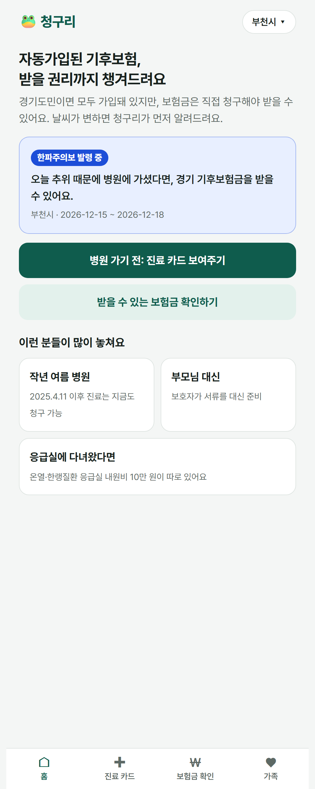
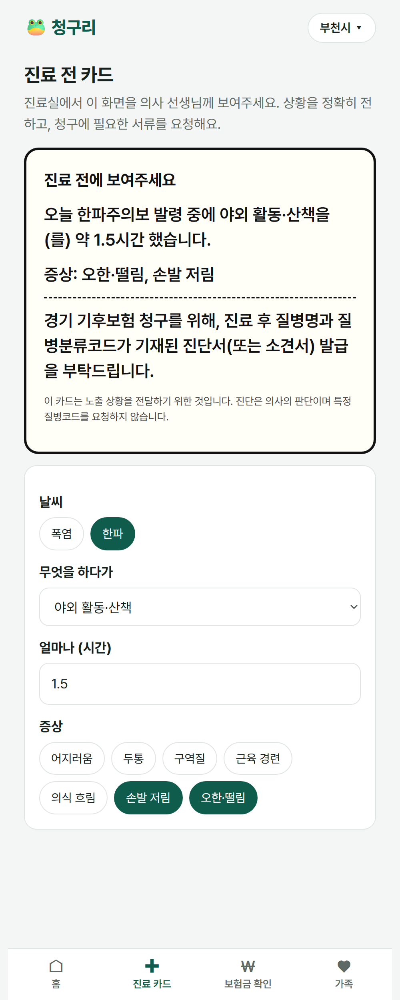
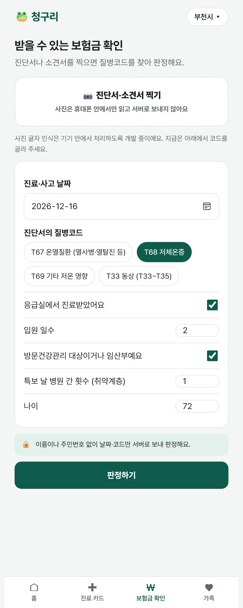
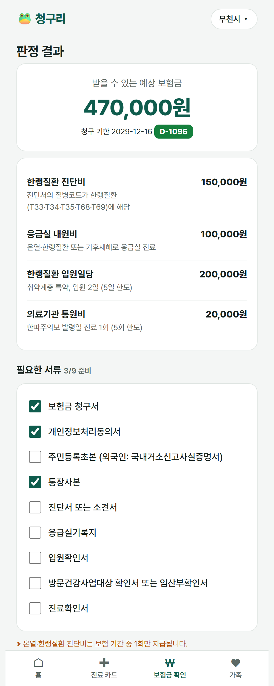
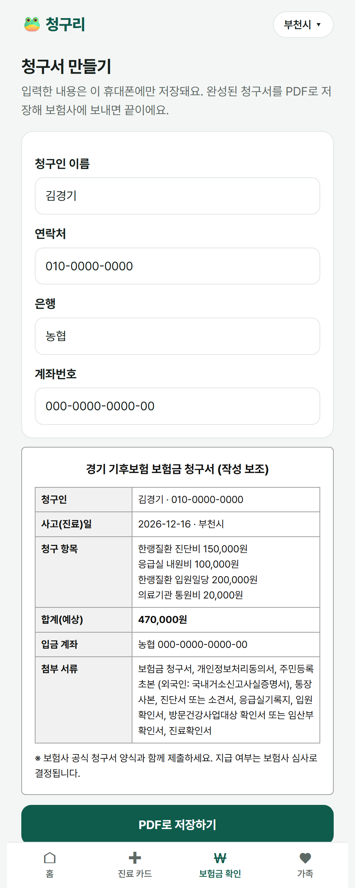
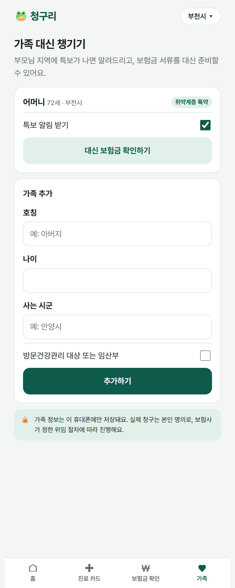

청구리 — UI/UX 시안 (실제 동작 화면 6개)
팀 한라봉귤흑돼지 · 시연 시나리오: 부천시 한파주의보 발령일, 방문건강관리 대상 72세 어머니가 저체온증(T68)으로 응급실 진료 후 2일 입원. 화면은 레포지토리의 프론트엔드를 실제 API와 연동해 캡처했습니다.

① 홈
내 지역 특보 감지, 진료 전 카드·보험금 확인 진입

② 진료 전 카드
노출 상황 전달 + 청구용 진단서 발급 요청 (코드 미요청)

③ 보험금 확인
진단서 사진(기기 내 처리)·질병코드·응급실·입원 입력

④ 판정 결과
예상 47만 원, 항목별 근거, 서류 체크리스트, 청구 기한

⑤ 청구서
기기에서만 입력·PDF 저장, 접수 채널 안내

⑥ 가족
부모님 지역 특보 알림, 대신 판정·서류 준비